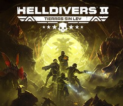
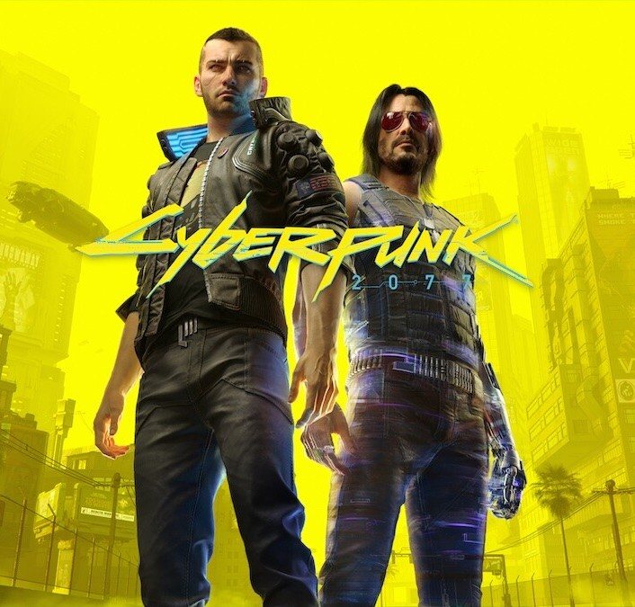

Helldivers 2
Helldivers 2 es un shooter cooperativo de ciencia ficción donde los jugadores defienden la “Super Tierra”
contra hordas alienígenas en misiones intensas y estratégicas.
Lo que me encanta es su modo cooperativo: nadie sobrevive solo.
Cada misión exige coordinación, comunicación y mucho caos controlado.
El sistema de progresión y el humor satírico del juego le dan un toque único.
Puedes visitar la página oficial del juego en
PlayStation.com

Cyberpunk 2077
Cyberpunk 2077 nos sumerge en Night City, una metrópolis llena de luces de neón, crimen y tecnología desbordante.
Después de su accidentado lanzamiento, el juego ha evolucionado enormemente gracias a parches y expansiones como “Phantom Liberty”.
La historia, los personajes y la ambientación son impresionantes.
Me encanta cómo aborda temas como la identidad, la memoria y el poder de la tecnología.
Más información en
Cyberpunk.net